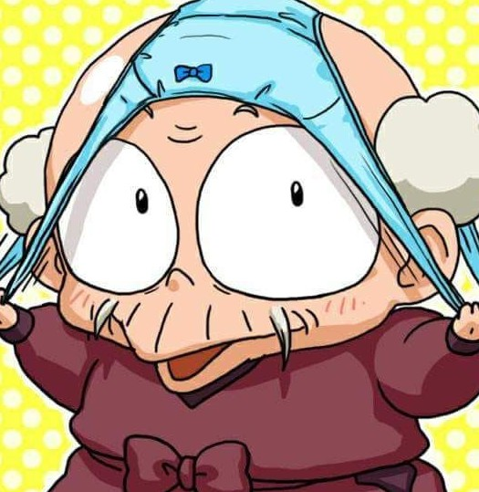

👴 Happosai

Happosai es el anciano maestro del dojo Tendo y el fundador de la Escuela de Artes Marciales Indiscriminadas.
🌀 Personalidad
Es un pervertido sin vergüenza que roba ropa interior femenina y molesta a las chicas. A pesar de su comportamiento, es un experto en artes marciales.
❤️ Relaciones
- Genma Saotome & Soun Tendo: Sus antiguos discípulos, a quienes trata con desprecio.
- Ranma Saotome: Lo acoje de disipulo aunque Ranma no quiere y este le atormenta constantemente con entrenamiento infernal.
🔎 Curiosidades
- Es increíblemente fuerte a pesar de su avanzada edad.
- Tiene una debilidad por la ropa interior femenina.
- Sin la ropa femenina puede llegar a morir.
🔊 Escucha su voz
🔙 Volver a la lista de personajes